The Basics
Each and every value in JavaScript has a set of behaviors you can observe from running different operations. That sounds abstract, but as a quick example, consider some operations we might run on a variable named message.
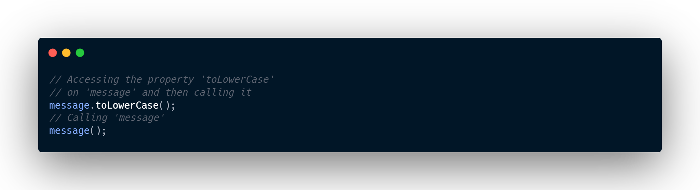If we break this down, the first runnable line of code accesses a property called toLowerCase and then calls it. The second one tries to call message directly.
But assuming we don’t know the value of message - and that’s pretty common - we can’t reliably say what results we’ll get from trying to run any of this code. The behavior of each operation depends entirely on what value we had in the first place.
- Is message callable?
- Does it have a property called toLowerCase on it?
- If it does, is toLowerCase even callable?
- If both of these values are callable, what do they return?
The answers to these questions are usually things we keep in our heads when we write JavaScript, and we have to hope we got all the details right.
Let’s say message was defined in the following way.
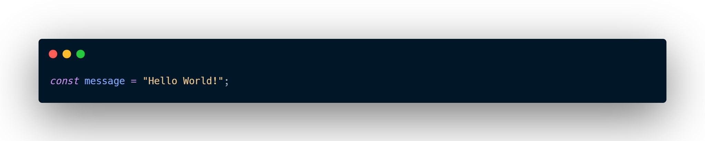As you can probably guess, if we try to run message.toLowerCase(), we’ll get the same string only in lower-case.
What about that second line of code? If you’re familiar with JavaScript, you’ll know this fails with an exception:
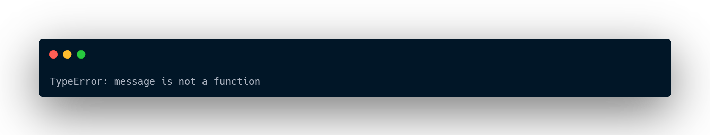It’d be great if we could avoid mistakes like this.
When we run our code, the way that our JavaScript runtime chooses what to do is by figuring out the type of the value - what sorts of behaviors and capabilities it has. That’s part of what that TypeError is alluding to - it’s saying that the string "Hello World!" cannot be called as a function.
For some values, such as the primitives string and number, we can identify their type at runtime using the typeof operator. But for other things like functions, there’s no corresponding runtime mechanism to identify their types. For example, consider this function:
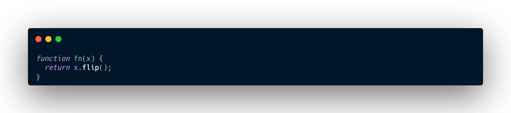We can observe by reading the code that this function will only work if given an object with a callable flip property, but JavaScript doesn’t surface this information in a way that we can check while the code is running. The only way in pure JavaScript to tell what fn does with a particular value is to call it and see what happens. This kind of behavior makes it hard to predict what the code will do before it runs, which means it’s harder to know what your code is going to do while you’re writing it.
Seen in this way, a type is the concept of describing which values can be passed to fn and which will crash. JavaScript only truly provides dynamic typing - running the code to see what happens.
The alternative is to use a static type system to make predictions about what the code is expected to do before it runs.
Static type-checking
Think back to that TypeError we got earlier from trying to call a string as a function. Most people don’t like to get any sorts of errors when running their code - those are considered bugs! And when we write new code, we try our best to avoid introducing new bugs.
If we add just a bit of code, save our file, re-run the code, and immediately see the error, we might be able to isolate the problem quickly; but that’s not always the case. We might not have tested the feature thoroughly enough, so we might never actually run into a potential error that would be thrown! Or if we were lucky enough to witness the error, we might have ended up doing large refactorings and adding a lot of different code that we’re forced to dig through.
Ideally, we could have a tool that helps us find these bugs before our code runs. That’s what a static type-checker like TypeScript does. Static types systems describe the shapes and behaviors of what our values will be when we run our programs. A type-checker like TypeScript uses that information and tells us when things might be going off the rails.
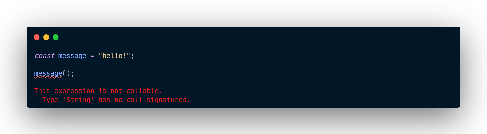Running that last sample with TypeScript will give us an error message before we run the code in the first place.
Non-exception Failures
So far we’ve been discussing certain things like runtime errors - cases where the JavaScript runtime tells us that it thinks something is nonsensical. Those cases come up because the ECMAScript specification has explicit instructions on how the language should behave when it runs into something unexpected.
For example, the specification says that trying to call something that isn’t callable should throw an error. Maybe that sounds like “obvious behavior”, but you could imagine that accessing a property that doesn’t exist on an object should throw an error too. Instead, JavaScript gives us different behavior and returns the value undefined:
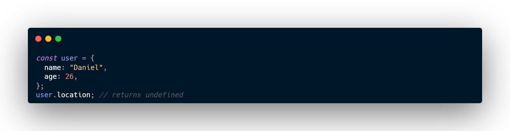Ultimately, a static type system has to make the call over what code should be flagged as an error in its system, even if it’s “valid” JavaScript that won’t immediately throw an error. In TypeScript, the following code produces an error about location not being defined:
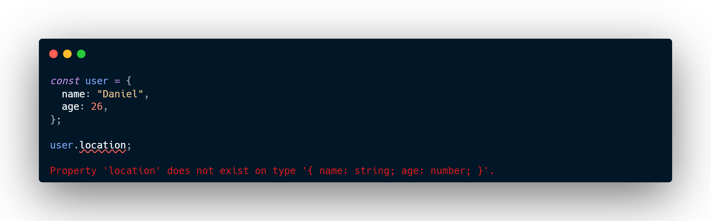While sometimes that implies a trade-off in what you can express, the intent is to catch legitimate bugs in our programs. And TypeScript catches a lot of legitimate bugs.
For example: typos,
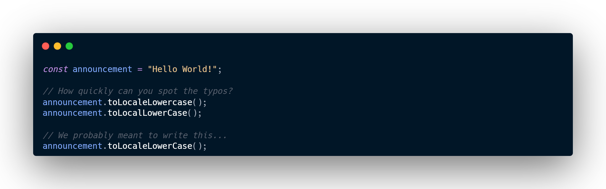uncalled functions,
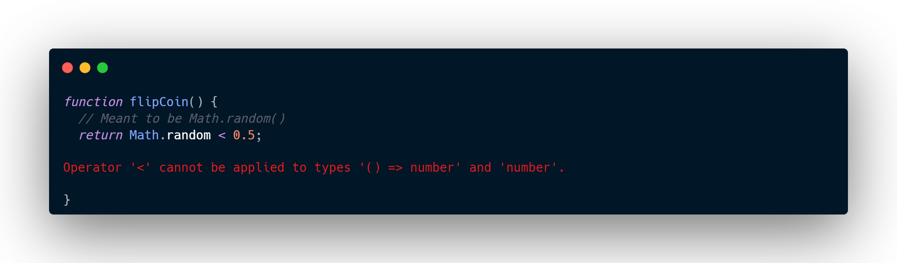or basic logic errors.
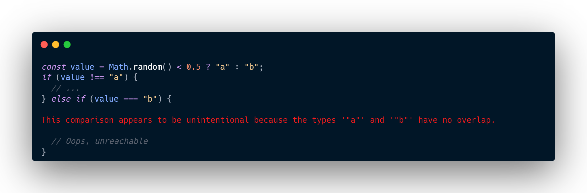Types for Tooling
TypeScript can catch bugs when we make mistakes in our code. That’s great, but TypeScript can also prevent us from making those mistakes in the first place.
The type-checker has information to check things like whether we’re accessing the right properties on variables and other properties. Once it has that information, it can also start suggesting which properties you might want to use.
That means TypeScript can be leveraged for editing code too, and the core type-checker can provide error messages and code completion as you type in the editor. That’s part of what people often refer to when they talk about tooling in TypeScript.
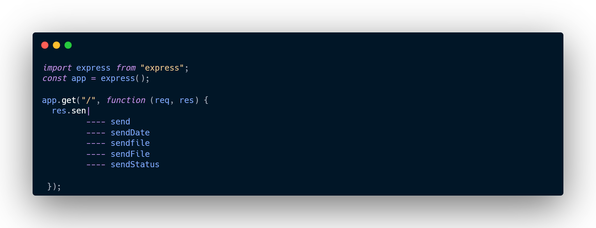TypeScript takes tooling seriously, and that goes beyond completions and errors as you type. An editor that supports TypeScript can deliver “quick fixes” to automatically fix errors, refactorings to easily re-organize code, and useful navigation features for jumping to definitions of a variable, or finding all references to a given variable. All of this is built on top of the type-checker and is fully cross-platform, so it’s likely that your favorite editor has TypeScript support available.
tsc, the TypeScript compiler
We’ve been talking about type-checking, but we haven’t yet used our type-checker. Let’s get acquainted with our new friend tsc, the TypeScript compiler. First we’ll need to grab it via npm.
Now let’s move to an empty folder and try writing our first TypeScript program: hello.ts:
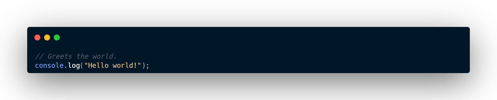Notice there are no frills here; this “hello world” program looks identical to what you’d write for a “hello world” program in JavaScript. And now let’s type-check it by running the command tsc which was installed for us by the typescript package.
Tada!
Wait, “tada” what exactly? We ran tsc and nothing happened! Well, there were no type errors, so we didn’t get any output in our console since there was nothing to report.
But check again - we got some file output instead. If we look in our current directory, we’ll see a hello.js file next to hello.ts. That’s the output from our hello.ts file after tsc compiles or transforms it into a plain JavaScript file. And if we check the contents, we’ll see what TypeScript spits out after it processes a .ts file:
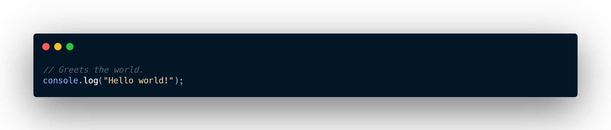In this case, there was very little for TypeScript to transform, so it looks identical to what we wrote. The compiler tries to emit clean readable code that looks like something a person would write. While that’s not always so easy, TypeScript indents consistently, is mindful of when our code spans across different lines of code, and tries to keep comments around.
What about if we did introduce a type-checking error? Let’s rewrite hello.ts:
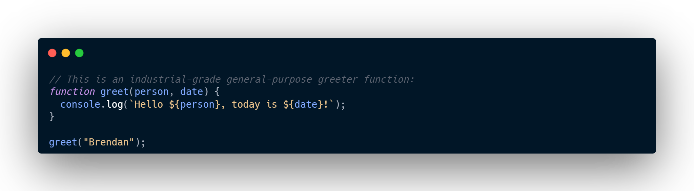If we run tsc hello.ts again, notice that we get an error on the command line!
TypeScript is telling us we forgot to pass an argument to the greet function, and rightfully so. So far we’ve only written standard JavaScript, and yet type-checking was still able to find problems with our code. Thanks TypeScript!
Emitting with Errors
One thing you might not have noticed from the last example was that our hello.js file changed again. If we open that file up then we’ll see that the contents still basically look the same as our input file. That might be a bit surprising given the fact that tsc reported an error about our code, but this is based on one of TypeScript’s core values: much of the time, you will know better than TypeScript.
To reiterate from earlier, type-checking code limits the sorts of programs you can run, and so there’s a tradeoff on what sorts of things a type-checker finds acceptable. Most of the time that’s okay, but there are scenarios where those checks get in the way. For example, imagine yourself migrating JavaScript code over to TypeScript and introducing type-checking errors. Eventually you’ll get around to cleaning things up for the type-checker, but that original JavaScript code was already working! Why should converting it over to TypeScript stop you from running it?
So TypeScript doesn’t get in your way. Of course, over time, you may want to be a bit more defensive against mistakes, and make TypeScript act a bit more strictly. In that case, you can use the noEmitOnError compiler option. Try changing your hello.ts file and running tsc with that flag:
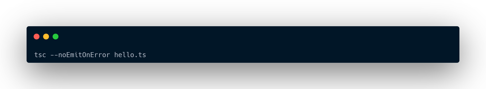You’ll notice that hello.js never gets updated.
Explicit Types
Up until now, we haven’t told TypeScript what person or date are. Let’s edit the code to tell TypeScript that person is a string, and that date should be a Date object. We’ll also use the toDateString() method on date.
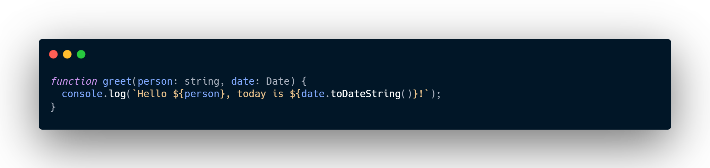What we did was add type annotations on person and date to describe what types of values greet can be called with. You can read that signature as ”greet takes a person of type string, and a date of type Date“.
With this, TypeScript can tell us about other cases where greet might have been called incorrectly. For example…
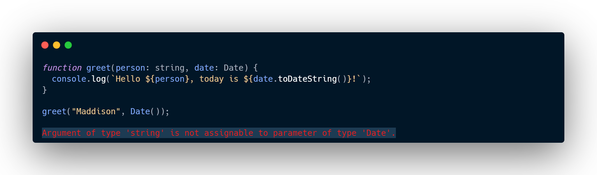Huh? TypeScript reported an error on our second argument, but why?
Perhaps surprisingly, calling Date() in JavaScript returns a string. On the other hand, constructing a Date with new Date() actually gives us what we were expecting.
Anyway, we can quickly fix up the error:
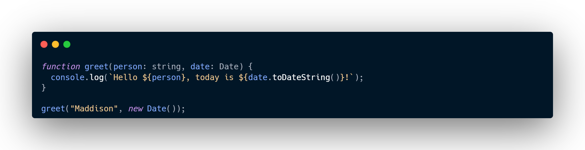Keep in mind, we don’t always have to write explicit type annotations. In many cases, TypeScript can even just infer (or “figure out”) the types for us even if we omit them.
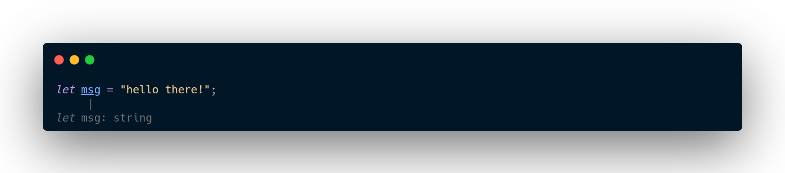Even though we didn’t tell TypeScript that msg had the type string it was able to figure that out. That’s a feature, and it’s best not to add annotations when the type system would end up inferring the same type anyway.
Erased Types
Let’s take a look at what happens when we compile the above function greet with tsc to output JavaScript:
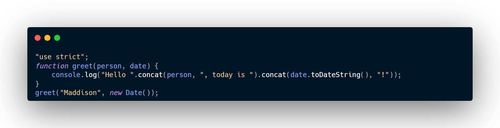Notice two things here:
- Our person and date parameters no longer have type annotations.
- Our “template string” - that string that used backticks (the ` character) - was converted to plain strings with concatenations.
More on that second point later, but let’s now focus on that first point. Type annotations aren’t part of JavaScript (or ECMAScript to be pedantic), so there really aren’t any browsers or other runtimes that can just run TypeScript unmodified. That’s why TypeScript needs a compiler in the first place - it needs some way to strip out or transform any TypeScript-specific code so that you can run it. Most TypeScript-specific code gets erased away, and likewise, here our type annotations were completely erased.
Downleveling
One other difference from the above was that our template string was rewritten from
to
Why did this happen?
Template strings are a feature from a version of ECMAScript called ECMAScript 2015 (a.k.a. ECMAScript 6, ES2015, ES6, etc. - don’t ask). TypeScript has the ability to rewrite code from newer versions of ECMAScript to older ones such as ECMAScript 3 or ECMAScript 5 (a.k.a. ES3 and ES5). This process of moving from a newer or “higher” version of ECMAScript down to an older or “lower” one is sometimes called downleveling.
By default TypeScript targets ES3, an extremely old version of ECMAScript. We could have chosen something a little bit more recent by using the target option. Running with --target es2015 changes TypeScript to target ECMAScript 2015, meaning code should be able to run wherever ECMAScript 2015 is supported. So running tsc --target es2015 hello.ts gives us the following output:
Strictness
Different users come to TypeScript looking for different things in a type-checker. Some people are looking for a more loose opt-in experience which can help validate only some parts of their program, and still have decent tooling. This is the default experience with TypeScript, where types are optional, inference takes the most lenient types, and there’s no checking for potentially null/undefined values. Much like how tsc emits in the face of errors, these defaults are put in place to stay out of your way. If you’re migrating existing JavaScript, that might be a desirable first step.
In contrast, a lot of users prefer to have TypeScript validate as much as it can straight away, and that’s why the language provides strictness settings as well. These strictness settings turn static type-checking from a switch (either your code is checked or not) into something closer to a dial. The further you turn this dial up, the more TypeScript will check for you. This can require a little extra work, but generally speaking it pays for itself in the long run, and enables more thorough checks and more accurate tooling. When possible, a new codebase should always turn these strictness checks on.
TypeScript has several type-checking strictness flags that can be turned on or off, and all of our examples will be written with all of them enabled unless otherwise stated. The strict flag in the CLI, or "strict": true in a tsconfig.json toggles them all on simultaneously, but we can opt out of them individually. The two biggest ones you should know about are noImplicitAny and strictNullChecks.
-
strictNullChecks
Recall that in some places, TypeScript doesn’t try to infer types for us and instead falls back to the most lenient type: any. This isn’t the worst thing that can happen - after all, falling back to any is just the plain JavaScript experience anyway.
However, using any often defeats the purpose of using TypeScript in the first place. The more typed your program is, the more validation and tooling you’ll get, meaning you’ll run into fewer bugs as you code. Turning on the noImplicitAny flag will issue an error on any variables whose type is implicitly inferred as any.
-
strictNullChecks
By default, values like null and undefined are assignable to any other type. This can make writing some code easier, but forgetting to handle null and undefined is the cause of countless bugs in the world - some consider it a billion dollar mistake! The strictNullChecks flag makes handling null and undefined more explicit, and spares us from worrying about whether we forgot to handle null and undefined.